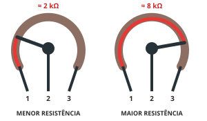
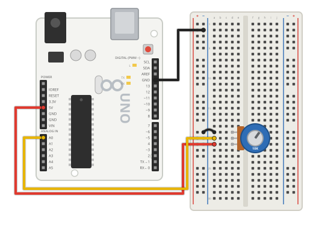

O que é um Potenciômetro?
O potenciômetro é um resistor variável. Ao girar o eixo, um contato deslizante (cursor) percorre uma trilha resistiva e muda a resistência entre o pino central e os pinos das pontas. Ligado entre 5 V e GND, ele funciona como divisor de tensão: o pino central entrega de 0 a 5 V, valor que o Arduino lê em uma entrada analógica.

Ao girar o eixo, o cursor muda o comprimento da trilha resistiva entre os pinos.
Como funciona
Por dentro há uma trilha resistiva em forma de arco, ligada aos pinos 1 e 3, e um cursor (contato deslizante) ligado ao pino 2, no meio.
Entre os pinos 1 e 3 a resistência é sempre a total (10 kΩ, por exemplo). Ao girar o eixo, muda a resistência entre o cursor e cada uma das pontas: uma aumenta enquanto a outra diminui.
Ligado entre 5 V e GND, o potenciômetro vira um divisor de tensão: o pino do meio entrega qualquer tensão entre 0 e 5 V, que o Arduino lê como um número de 0 a 1023.

Tipos
Rotativo
O mais comum: gira cerca de 270°. É o botão de volume de rádios e caixas de som.
Deslizante (slider)
O cursor anda em linha reta, como nas mesas de som.
Trimpot
Pequeno, ajustado com chave de fenda e usado para calibrar circuitos.
Linear (B) × logarítmico (A)
No linear (B10K), a resistência muda por igual ao girar. O logarítmico (A10K) é próprio para áudio.
Ficha técnica
- Valor usado na oficina: 10 kΩ, linear (marcação B10K)
- Pinos 1 e 3: pontas da trilha · pino 2: cursor
- No Arduino: pontas no 5V e no GND, meio no A0
- Inverter os pinos 1 e 3 inverte o sentido do giro
Montagem dos componentes

Potenciômetro ligado ao 5V, ao A0 (pino do meio) e ao GND.
Você vai precisar de
- 1× Arduino Uno R3 + cabo USB
- 1× Protoboard
- 1× Potenciômetro de 10 kΩ
- 4× Jumpers macho-macho
Ligações
| 5V | Pino 1 (ponta) |
|---|---|
| A0 | Pino 2 (meio, cursor) |
| GND | Trilha (−) → pino 3 (ponta) |
#< código exemplo >
Abra o Monitor Serial (9600) e gire o eixo: a leitura vai de 0 a 1023, a tensão de 0 a 5 V e a posição de 0 a 100%. No Plotter Serial dá para ver o gráfico em tempo real.
/*
Oficina de Robótica SELFÍS — Componente: Potenciômetro
Exemplo: ler a posição do potenciômetro no Monitor Serial.
Ligações: 5V -> pino 1 | A0 -> pino 2 (meio) | GND -> pino 3
*/
void setup() {
Serial.begin(9600);
}
void loop() {
int leitura = analogRead(A0); // 0 a 1023
float tensao = leitura * (5.0 / 1023.0); // 0 a 5 V
int porcento = map(leitura, 0, 1023, 0, 100); // 0 a 100 %
Serial.print("Leitura: ");
Serial.print(leitura);
Serial.print(" | ");
Serial.print(tensao, 2);
Serial.print(" V | ");
Serial.print(porcento);
Serial.println(" %");
delay(200);
}
💡 Teste primeiro no Tinkercad (Circuitos → Código → Texto → cole o código → Iniciar simulação). Depois carregue na placa real pela Arduino IDE.